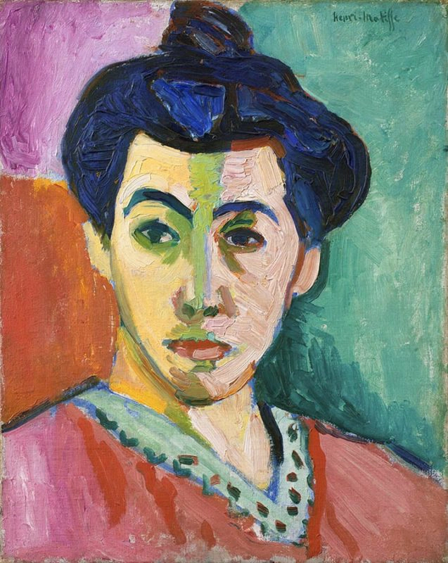
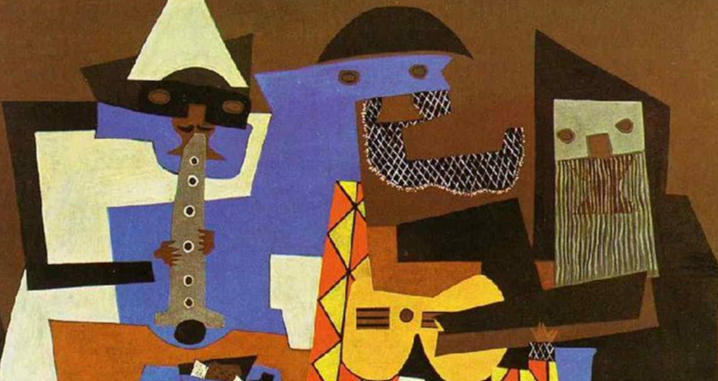

Fauvism
Portrait of Madame Matisse by Henri Matisse, 1905. via the National Gallery of Denmark, Copenhagen.

Suprematism
Woman at the Tram Stop by Kazimir Malevich, 1913, via Stedelijk Museum, Amsterdam.

Cubism
Three Musicians by Pablo Picasso, 1921, via the Pablo Picasso Museum, Barcelona.

Pointillist
Morning, Interior, by Maximilien Luce, 1890, via the Metropolitan Museum of Art, New York City.

Expressionism
The Scream by Edvard Munch, 1983, via the Munch Museum, Oslo.
About
hai. aku fish, ketua dari kelompok 4. ini adalah percobaan pembuatan website bertemakan seni lukis simpel.
Anggota Kelompok
anggota kami berisikan; hafizh, regan, nia, keisha, devita, dan adiasto.